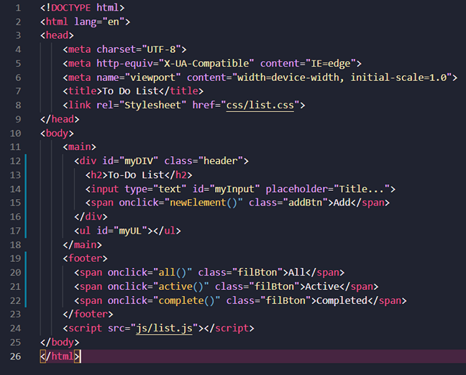
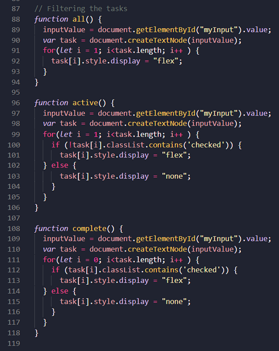

Challenge One: Todo
Build a simple web app to manage a ToDo list.
I don't know where to start. It was a true challenge for me. I don't know why JavaScript is much more difficult to understand than Java. I spent a lot of time figuring out how to do it, I look tutorial on the internet, some videos, some readings, I reviewed the book as well looking for answers or to give me an idea about how to do it. I think the most challenging was the Local Storage and the Task Filter function. I didn't know how to do the local storage part. The internet is full of different ways to do it and work with it. I felt overwhelmed but I didn't give up.
At the beginning I started my code without a form tag and I added onclick events to all my buttons, so my HTML looked like this:
I didn't know how importand would be to use the form tag. I started with the simplest, how to add the new task, at the beggining I used the created element and appendchild methods it worked but it made my life more difficult after. After seeing some tuturials I dicided to use another way to create the new task, in a tutorial I found they suggested to create the string concatenating all the values to create the HTML tags and atrributes.
After the most difficult would be the Local Storage and the task filter, at the beginning this was my filter idea, using the HTML above and my first JS code:
It worked in a way but the true challenge would be the Local Storage, I spent a lot of time how to do it, that's why I started to look on internet several tutorials, suggestions, advices and everything that could help me until I found one that helped me a lot but I had to change almost all of my code. I have I was able to finish it, with some help the internet provided me, I didn't know if for this activity we had the possibility to ask for help to my peers so I didn't. I don't know how they did it and if for they it was a challenge or an easy task, I will asked them after I received my proper grade.
Code excersise:
I wrote comments in the CSS and JS files.
The To-Do app